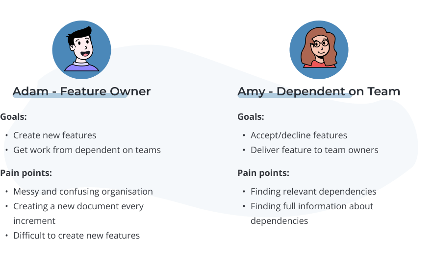
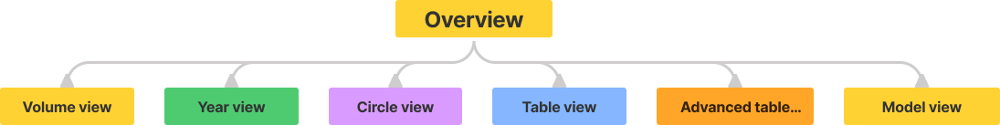

DEPENDENCY TOOL
The dependencies tool is an app that has the objective to better handles dependencies for different teams in a company.
My role on the project was to fully create an application from scratch using Microsoft's Power Apps. Therefore, I did both the design and main part of the development.
MY OPPORTUNITY
During one summer I had the opportunity to work as a summer worker at a company that develops vehicles. Together with another summer worker, our roles where to develop a tool that could simplify the work for the company's employees. One of those projects was to develop a tool that better handles dependencies between teams.
(For certain reasons I am recommended not to name the vehicle company.)
Microsoft Power Apps
The company has a long process when it comes to allowing and implementing new tools in their organisation. Because the company already uses Microsoft's tools, we decided to develop the tool inside Microsoft's Power apps to avoid the long waiting process. Shortly Power apps is a tool used to quickly build custom apps for business needs and was perfect for the project.
DEFINING THE PRODUCT OBJECTIVES
To determent the problem we needed to dive deeper into why the current way of handling dependencies was flawed. We therefore decided to try to better understand our main users, how they currently used the tool and what problems they faced when creating dependencies.
Main users
We booked meetings with our stakeholder and talked to employees at the company to get a better understanding of what problems they faced when creating and handling dependency's. The people included various employees and was for example managers, engineers and designers. By discussing their pain points, needs and how they used the tool we managed to get a deeper level of sympathy for the users.
What the research showed
After talking to the users, we could categorise our users into two general groups. These included the feature owner that relied on work form the dependent on team, which needed to accept the team owners requested feature. To represent both sides that made up this relationship I created two simplified and generalised user personas breaking down the different types of users.
Through our research and personas, we could determent that the main problem was that dependencies currently were handled in an excel document. As the employees will be planning their dependencies at the same time the excel document would have a large amount of people editing the same document at the same time. This frequently created confusion and difficulties between users when editing inside the document. Because of excels limitations it also didn't have any simple way to filter the large amount of data stored in the document and a new excel document was created for each increment. To clearly define the problem, I created a bullet list summarising the main pain points.
Main Pain points
- Finding the relevant dependency
- Accepting/declining dependencies
- Creating a new document every increment
- Multiple people editing the same document
Requirement's specification
To transform and clarify the users need into features that could be implemented into the tool a requirement's specification was created. This was used during the work process to remember what was to be included, as well as what's to be avoided.
- Content
- Gallery showing the created dependency's
- Short overview information about the created dependency's
- Dependency cards with full information
- Functions
- Filter panel for the gallery
- Be able to update data
- Create new Teams
- Create new increments
- Create new dependency
- Edit a dependency
- Remove a dependency
Sketch, iterate, iterate and iterate
As I didn't have access to a prototype tool when working at the company, I had to get create them using other methods. I therefore spent a good amount of time creating sketches by hand. Because of the limitations inside of Power apps I kept the design simple. When satisfied with the design we presented it and our ideas to the stakeholder where we got some feedback. The stakeholder for example wanted checkboxes when selecting sprints and a searchable function where the user could search for a feature.
Developing inside power apps
Now it was time to move the design into power apps. After one and a half week of development, I had created a simple functioning app even though it visually wasn't fully complete. The next step was to test this prototype with some of the possible end users.
Testing
I shared the demo version of the tool to my stakeholder and two other employees and gave them a few simple tasks to complete while thinking out loud and give a short reflection afterword's.
- Create a new dependency and find it in the gallery
- Edit a dependency's status and other information
- Use filter panel to all dependency from a specific team
- Remove a dependency from the list
While completing some of the tasks mentioned above, I observed what they found troublesome and what they found easy. Things that user commented or found difficult was changed or added into the application. Some examples of features and their solutions are summarised in the list below.
- Thinking that the reset button for the filters was a apply button
- Changed the colour from blue to grey to reduce attention and minimising its Call-to-Action
- Leaving important boxes empty when creating new feature
- Added a star next to important boxes and error messages when not filled
- Not understanding how the search function works
- Changed the hint text to “choose a feature” instead of “search for a feature”
- Being unsure if the dependency was created
- Added a dropdown massage after creating a dependency
The finished results
After more testing and multiple demo versions the finishing design of the application was completed. The application could then be access though the company's communication tools.
SharePoint
The app fetches data from a SharePoint list located in a SharePoint site and the users can edit the data both through the application and the SharePoint list.
Browse view
The browse view is the main screen and lets you quickly scan through multiple dependencies to find the relevant one. On the screen there are many ways to filter what dependencies. There is for example a filter panel and a search function.
Detailed view
Detailed view is the screen where more information about the dependency is shown. Here you can also navigate to the edit view and delete an existing dependency.
Edit view
In the edit view the user can either create a new dependency or edits an already existing. After creating/editing a dependency a message will show if it was done successfully or if the user missed something.
Finishing words
A help document describing the tool in detail was created to ensure that the tool function properly after our leave. According to our stakeholders the tool is currently in use and if it goes smoothly other departments in the orginisation will also convert to the application.